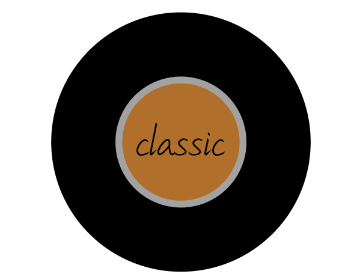
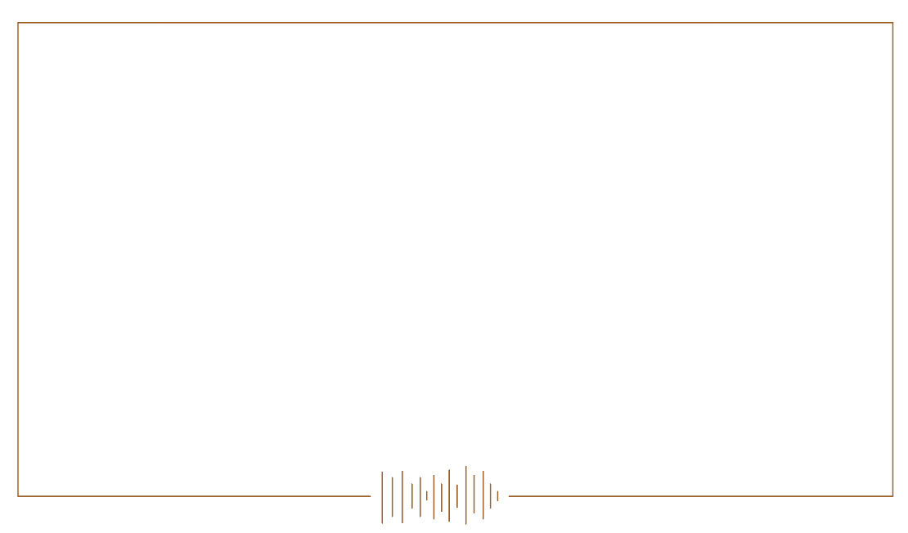

Classic형
당신에게 옛스러운 매력을 가진 클래식을 추천합니다!
당신의 장점은?
당신은 내향적이지만 적극적이고 인내심도 강하며 자기자신을 가지고 있다는 점이 당신의 최고 장점이에요.
이러한 장점은 당신을 더욱 빛나게 해주고 이러한 장점으로 인해 친구는 적지만 좋은친구들과 오랜 우정을 간직 할 수 있을거에요.
당신의 단점은?
당신의 단점은 지나치게 현실적이고 이성적으로 생각하는 사람이라서 누군가에게 상처를 줄 수 있어요.
이러한 단점은 친구들이 당신의 장점을 보고 왔다가 단점으로 인해 떠나기 때문에 오랜 우정을 간직하기에는 어려울 수 있어요.
당신의 추천노래는?
단점으로인해 당신과 당신의 친구 서로가 상처를 받는 당신.
‘G선상의 아리아’ , ‘마왕’ ,‘흑건’ 같이 아름다운 노래로 좀 더 부드러운 말을 던져 보고 마음도 치유해 보는 것은 어떨까요?
나를 다시 알아볼까?
되돌아가기